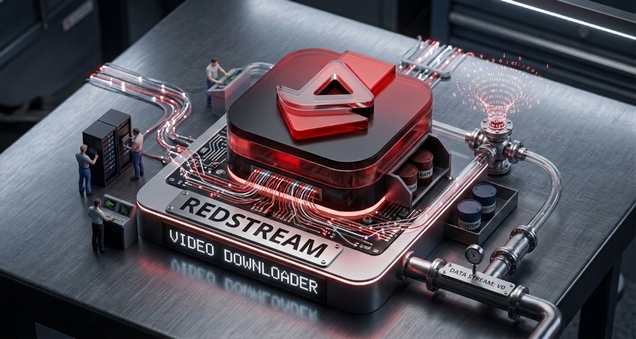

🖼️ Интерфейс

Простой и удобный десктопный загрузчик видео с минималистичным интерфейсом для YouTube, Instagram, TikTok и сотен других платформ.
Скачать для Windows (x64)
Скачивание видео (MKV, MP4) и аудио (OPUS, M4A, MP3). Поддержка YouTube, Instagram, TikTok и сотен других сайтов.
Динамический выбор разрешения, FPS и кодеков (AV1, VP9, H.264). Умный подбор лучшей альтернативы.
Обрезка видео по точным таймкодам прямо во время скачивания. Не нужно скачивать файл целиком!
Запланируйте скачивание на конкретную дату и время. Работает в фоне даже при закрытом окне интерфейса.
Поддержка HTTP/SOCKS прокси с авторизацией и обход возрастных ограничений через локальный браузер.
Автоматическая проверка и обновление самой программы, yt-dlp и ffmpeg при запуске приложения.
1. Скачайте последний релиз из раздела Releases.
2. Запустите RedStream_Setup_x64.exe и следуйте инструкциям на экране.
Выполните следующие команды в терминале:
git clone https://github.com/frostbittenbull/RedStream.git cd RedStream curl -L https://github.com/yt-dlp/yt-dlp/releases/latest/download/yt-dlp.exe -o yt-dlp.exe curl -L https://www.gyan.dev/ffmpeg/builds/ffmpeg-git-essentials.7z -o ffmpeg.7z # Распаковать ffmpeg.7z и положить ffmpeg.exe рядом с redstream.py pip install -r requirements.txt python redstream.py
Все загруженные файлы сохраняются в папку RedStream Downloader внутри вашей стандартной папки «Загрузки». Вы можете легко изменить этот путь прямо в интерфейсе программы.
Нажмите кнопку ⚙ рядом с полем ввода ссылки. В открывшемся окне укажите таймкоды «Начало» и «Конец» в формате ЧЧ:ММ:СС. Если поля оставить пустыми — видео скачается целиком.
Нажмите Дополнительно → Планировщик:
* Таймер работает в фоне, окно можно закрыть.
Для видео с возрастными ограничениями (18+) выберите ваш браузер в выпадающем списке. Программа использует ваши куки для доступа.
⚠️ Перед скачиванием браузер должен быть закрыт.